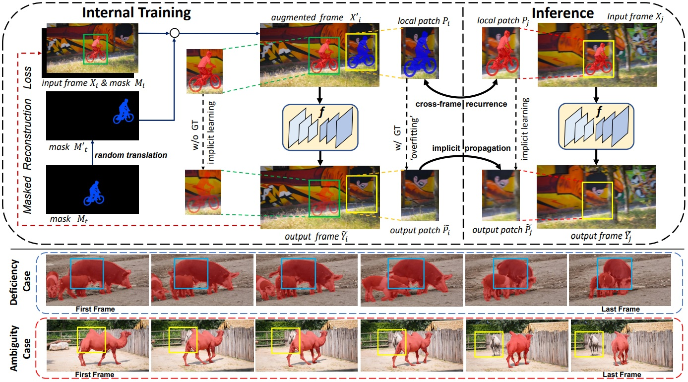
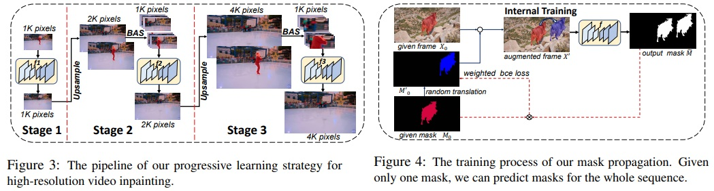
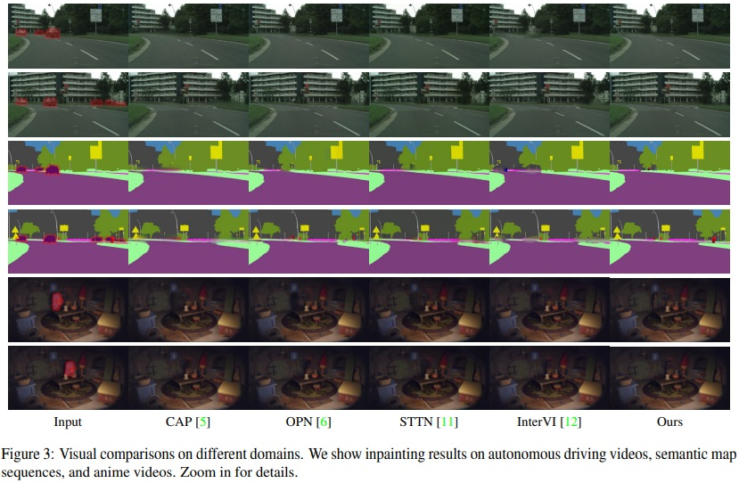
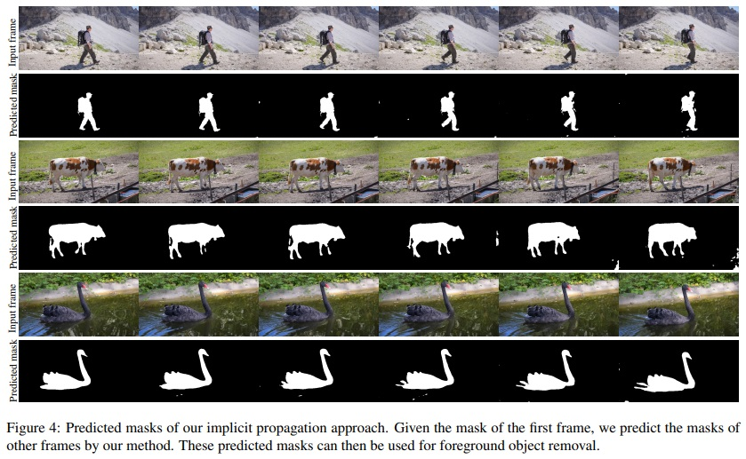
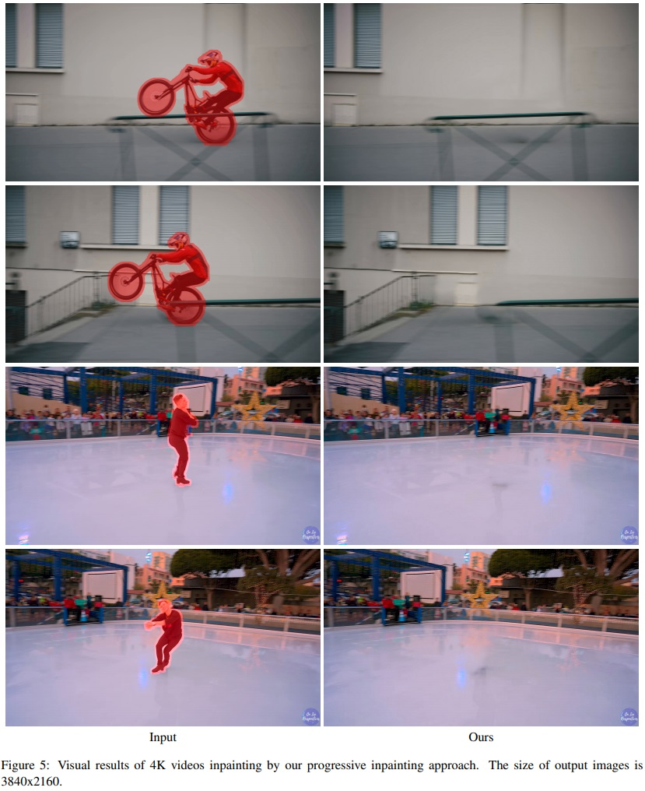

Internal Video Inpainting by Implicit Long-range Propagation
ICCV 2021

Abstract
We propose a novel framework for video inpainting by adopting an internal learning strategy. Unlike previous methods that use optical flow for cross-frame context propagation to inpaint unknown regions, we show that this can be achieved implicitly by fitting a convolutional neural network to the known region. Moreover, to handle challenging sequences with ambiguous backgrounds or long-term occlusion, we design two regularization terms to preserve high-frequency details and long-term temporal consistency. Extensive experiments on the DAVIS dataset demonstrate that the proposed method achieves state-of-the-art inpainting quality quantitatively and qualitatively. We further extend the proposed method to another challenging task: learning to remove an object from a video giving a single object mask in only one frame in a 4K video.
Results
Approach
Overview of our internal video inpainting method. Without optical flow estimation and training on large datasets, we learn the implicit propagation via intrinsic properties of natural videos and neural network. By learning internally on augmented frames, the network f serves as a neural memory function for long-range information. When inference, cross-frame contextual information is implicitly propagated to complete masked regions. For non-ideal cases of deficiency and ambiguity where cross-frame information is unavailable or ambiguous, we design two regularization terms for perceptually-realistic and temporally-consistent reconstruction.
Extensions
Video Inpainting for Multiple Domains
Most recent video inpainting methods are trained on large video datasets to achieve promising completion performance. Prior internal methods also rely on well-trained and off-the-shelf optical flow estimation networks trained on a target domain. However, the dataset collection process is time-consuming and labor-intensive, and these methods may suffer from performance drop when test videos are in different domains from training videos. Our implicit internal video inpainting method can be helpful when we only want to inpaint/edit few videos from a new domain, but do not want to spend days and dollars on collecting hundreds of videos from the same domain, and training a large network.
Single-frame Object Removal
Removing objects in video sequences using only a single frame mask is highly preferred to decrease the involved human labor. We show that by exchanging the input and the output in the above formulation, the proposed scheme can also propagate a given object mask to other frames.
Video Inpainting for 4K videos
Our formulation possesses great flexibility to extend to more challenging settings: completing ultra high-resolution image sequences, such as videos with 4K resolution.
BibTeX
@inproceedings{ouyang2021video,
title={Internal Video Inpainting by Implicit Long-range Propagation},
author={Ouyang, Hao and Wang, Tengfei and and Chen, Qifeng},
booktitle={International Conference on Computer Vision (ICCV) },
year={2021}
}